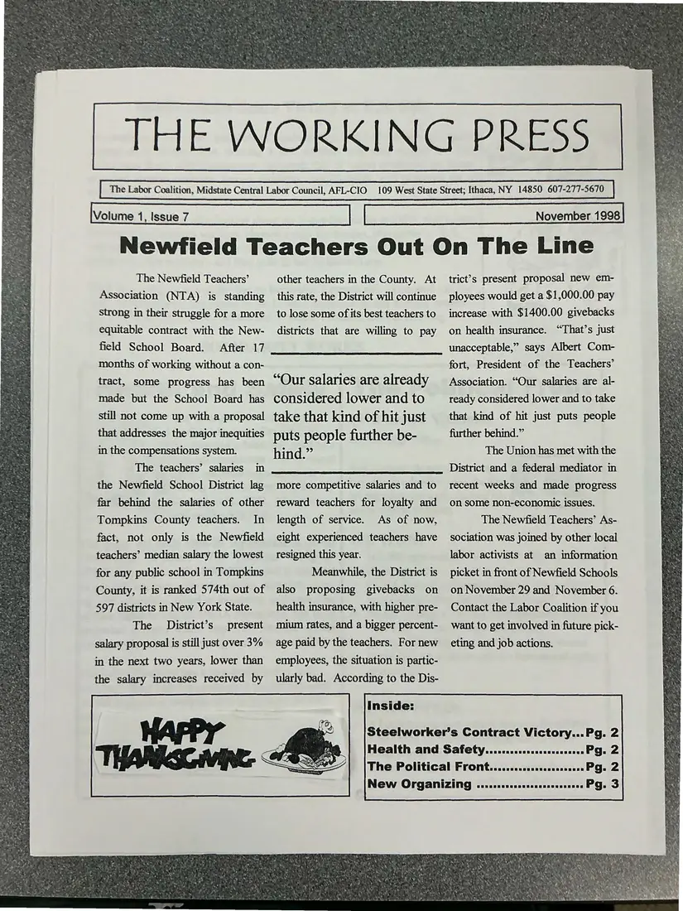
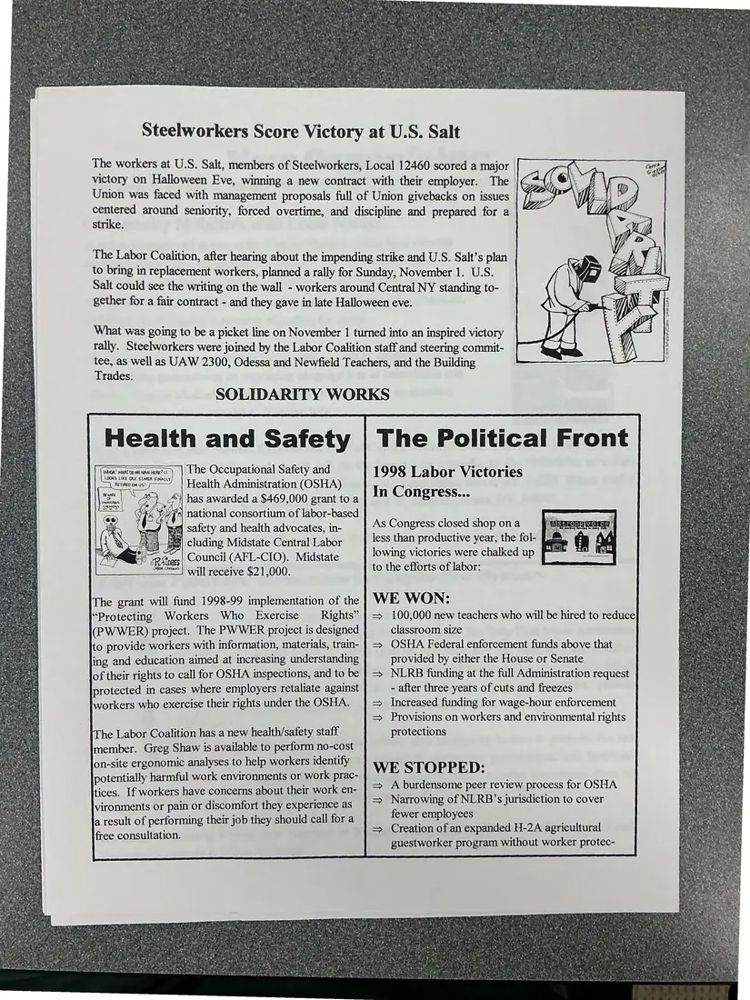
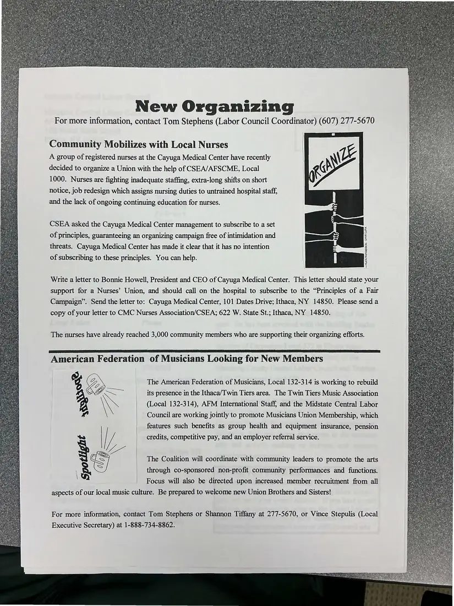
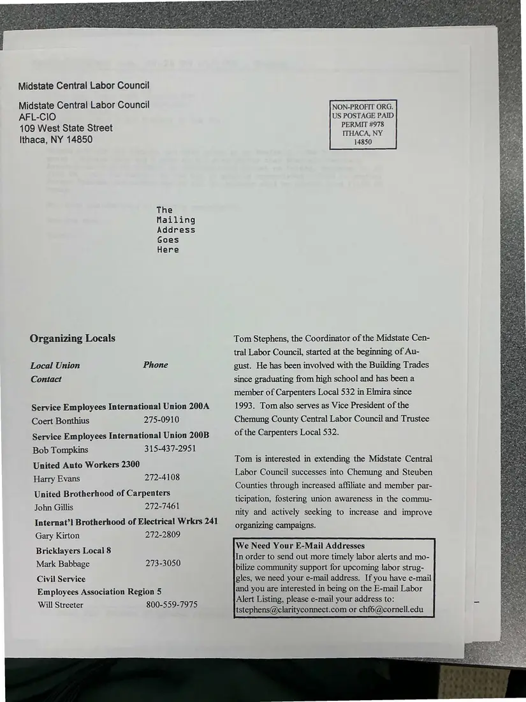

Newsletter, 4 pages
The Working Press, Volume 1, Issue 7, November 1998
November 1998
The four-page newspaper of the Labor Coalition / Midstate Central Labor Council. It leads with “Newfield Teachers Out On The Line” and includes the Steelworkers' contract victory at U.S. Salt, health and safety news, the political front, Cayuga Medical Center nurses organizing, and the musicians' union. The pages were photographed back-to-front and are shown in reading order.
The 1998 Working Press restarted its volume numbering. The 1986–1990 run is in The Working Press archive on this site.
Download or cite this itemPages


(open zoom view)Read the page text (machine-read, mostly readable)
This text was generated automatically from the photograph and has not been corrected. The image is the authoritative record.
THE WORKING PRESS The Labor Coalition, Midstate Central Labor Council, AFL-CIO 109 West State Street; Ithaca, NY 14850 607-277-5670 Volume 1, Issue 7 November 1998 Newfield Teachers Out On The Line The Newfield Teachers’ Association (NTA) is standing Strong in their struggle for a more equitable contract with the New- field School Board. After 17 months of working without a con- tract, some progress has been made but the School Board has still not come up with a proposal that addresses the major inequities in the compensations system. The teachers’ salaries in the Newfield School District lag far behind the salaries of other Tompkins County teachers. In fact, not only is the Newfield teachers’ median salary the lowest for any public school in Tompkins County, it is ranked 574th out of 597 districts in New York State. The District’s present salary proposal is still just over 3% in the next two years, lower than the salary increases received by other teachers in the County. At this rate, the District will continue to lose some of its best teachers to districts that are willing to pay “Our salaries are already considered lower and to take that kind of hit just puts people further be- hind.” more competitive salaries and to reward teachers for loyalty and length of service. As of now, eight experienced teachers have resigned this year. Meanwhile, the District is also proposing givebacks on health insurance, with higher pre- mium rates, and a bigger percent- age paid by the teachers. For new employees, the situation is partic- ularly bad. According to the Dis- trict’s present proposal new em- ployees would get a $1,000.00 pay increase with $1400.00 givebacks on health insurance. “That’s just unacceptable,” says Albert Com- fort, President of the Teachers’ Association. “Our salaries are al- ready considered lower and to take that kind of hit just puts people further behind.” The Union has met with the District and a federal mediator in recent weeks and made progress on some non-economic issues. The Newfield Teachers’ As- sociation was joined by other local labor activists at an information picket in front of Newfield Schools on November 29 and November 6. Contact the Labor Coalition if you want to get involved in future pick- eting and job actions. Steelworker’s Contract Victory...Pg. 2 Health and Safety. ..........csssessss0002 PQ. 2 The Political FrOmtivccscccccatsacuenecces Pg. 2 New Organizing .........ceessssees Pg. 3


(open zoom view)Read the page text (machine-read, mostly readable)
This text was generated automatically from the photograph and has not been corrected. The image is the authoritative record.
Steelworkers Score Victory at U.S. Salt The workers at U.S. Salt, members of Steelworkers, Local 12460 scored a major victory on Halloween Eve, winning a new contract with their employer. The Union was faced with management proposals full of Union givebacks on issues centered around seniority, forced overtime, and discipline and prepared for a strike. The Labor Coalition, after hearing about the impending strike and U.S. Salt’s plan to bring in replacement workers, planned a rally for Sunday, November 1. U.S. Salt could see the writing on the wall - workers around Central NY standing to- gether for a fair contract - and they gave in late Halloween eve. What was going to be a picket line on November 1 turned into an inspired victory — rally. Steelworkers were joined by the Labor Coalition staff and steering commit- _ tee, as well as UAW 2300, Odessa and Newfield Teachers, and the Building IL Trades. SOLIDARITY WORKS The Occupational Safety and Health Administration (OSHA) i has awarded a $469,000 grant to a WHOA! WHAT DO WE HAVE HERE? 1T LOOKS LIKE OLE ELMER FINALLY RETIAED ON US! | Caaseees national consortium of labor-based mm] safety and health advocates, in- #| cluding Midstate Central Labor ~ | Council (AFL-CIO). Midstate will receive $21,000. The grant will fund 1998-99 implementation of the “Protecting Workers Who Exercise Rights” (PWWER) project. The PWWER project is designed to provide workers with information, materials, train- ing and education aimed at increasing understanding member. Greg Shaw is available to perform no-cost on-site ergonomic analyses to help workers identify vironments or pain or discomfort they experience as a result of performing their job they should call for a free consultation. 1998 Labor Victories In Congress... As Congress closed shop on a less than productive year, the fol- lowing victories were chalked up to the efforts of labor: WE WON: 100,000 new teachers who will be hired to reduce classroom size OSHA Federal enforcement funds above that provided by either the House or Senate NLRB funding at the full Administration request - after three years of cuts and freezes Increased funding for wage-hour enforcement Provisions on workers and environmental rights protections WE STOPPED: = A burdensome peer review process for OSHA => Narrowing of NLRB’s jurisdiction to cover fewer employees = Creation of an expanded H-2A agricultural guestworker program without worker protec-


(open zoom view)Read the page text (machine-read, mostly readable)
This text was generated automatically from the photograph and has not been corrected. The image is the authoritative record.
New Organizing For more information, contact Tom Stephens (Labor Council Coordinator) (607) 277-5670 Community Mobilizes with Local Nurses A group of registered nurses at the Cayuga Medical Center have recently decided to organize a Union with the help of CSEA/AFSCME, Local 1000. Nurses are fighting inadequate staffing, extra-long shifts on short notice, job redesign which assigns nursing duties to untrained hospital staff, and the lack of ongoing continuing education for nurses. CSEA asked the Cayuga Medical Center management to subscribe to a set of principles, guaranteeing an organizing campaign free of intimidation and threats. Cayuga Medical Center has made it clear that it has no intention of subscribing to these principles. You can help. —Huck/Konopacki, UAW-LUPA Write a letter to Bonnie Howell, President and CEO of Cayuga Medical Center. This letter should state your support for a Nurses’ Union, and should call on the hospital to subscribe to the “Principles of a Fair Campaign”. Send the letter to: Cayuga Medical Center, 101 Dates Drive; Ithaca, NY 14850. Please send a copy of your letter to CMC Nurses Association/CSEA; 622 W. State St.; Ithaca, NY 14850. The nurses have already reached 3,000 community members who are supporting their organizing efforts. American Federation of Musicians Looking for New Members % Zs The American Federation of Musicians, Local 132-314 is working to rebuild GP. Ss its presence in the Ithaca/Twin Tiers area. The Twin Tiers Music Association \\ (Local 132-314), AFM International Staff, and the Midstate Central Labor Council are working jointly to promote Musicians Union Membership, which features such benefits as group health and equipment insurance, pension credits, competitive pay, and an employer referral service. The Coalition will coordinate with community leaders to promote the arts through co-sponsored non-profit community performances and functions. Focus will also be directed upon increased member recruitment from all aspects of our local music culture. Be prepared to welcome new Union Brothers and Sisters! For more information, contact Tom Stephens or Shannon Tiffany at 277-5670, or Vince Stepulis (Local Executive Secretary) at 1-888-734-8862.


(open zoom view)Read the page text (machine-read, mostly readable)
This text was generated automatically from the photograph and has not been corrected. The image is the authoritative record.
Midstate Central Labor Council Midstate Central Labor Council AFL-CIO 109 West State Street Ithaca, NY 14850 The Mailing Address Goes Here Organizing Locals Local Union Phone Contact Service Employees International Union 200A Coert Bonthius 275-0910 Service Employees International Union 200B Bob Tompkins 315-437-2951 United Auto Workers 2300 Harry Evans 272-4108 United Brotherhood of Carpenters John Gillis 272-7461 Internat’! Brotherhood of Electrical Wrkrs 241 Gary Kirton 272-2809 Bricklayers Local 8 Mark Babbage 273-3050 Civil Service Employees Association Region 5 Will Streeter 800-559-7975 NON-PROFIT ORG. US POSTAGE PAID PERMIT #978 ITHACA, NY 14850 Tom Stephens, the Coordinator of the Midstate Cen- tral Labor Council, started at the beginning of Au- gust. He has been involved with the Building Trades since graduating from high school and has been a member of Carpenters Local 532 in Elmira since 1993. Tom also serves as Vice President of the Chemung County Central Labor Council and Trustee of the Carpenters Local 532. Tom is interested in extending the Midstate Central Labor Council successes into Chemung and Steuben Counties through increased affiliate and member par- ticipation, fostering union awareness in the commu- nity and actively seeking to increase and improve organizing campaigns. We Need Your E-Mail Addresses In order to send out more timely labor alerts and mo- bilize community support for upcoming labor strug- gles, we need your e-mail address. If you have e-mail and you are interested in being on the E-mail Labor Alert Listing, please e-mail your address to: tstephens@clarityconnect.com or chf6@cornell.edu
See something wrong, or recognize a person or event? Send a correction. If you hold rights in this item or think it should not be public, write to the same address.